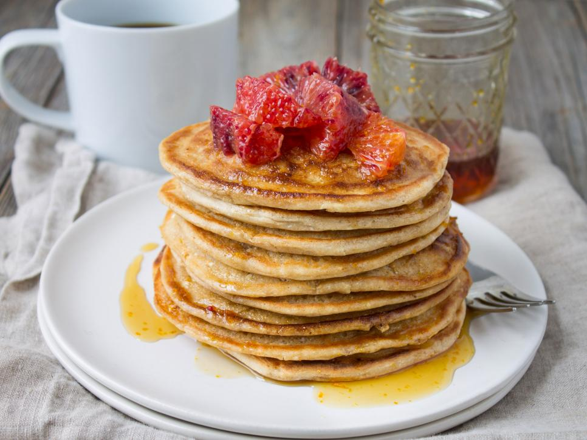

Blood Orange Whole-Wheat Ricotta Pancakes

Ricotta pancakes are deliciously fluffy, rich and indulgent-tasting.
The blood orange adds a hint of refreshing, sweet and tart citrus, and of course a beautiful, bold color.
Ingredients:
Pancakes:
- 1 cup white whole wheat flour
- 1/2 tablespoon baking powder
- 1/2 teaspoon salt
- 1 cup ricotta
- 1/2 cup almond milk
- 1/2 teaspoon vanilla
- 1 teaspoon blood orange zest plus 2 tablespoons blood orange juice
- 1 egg
- 2 tablespoons butter
Blood Orange Syrup (optional):
- 1/3 cup maple syrup
- 1/4 teaspoon blood orange zest
- Blood orange slices, for garnish
Directions:
- For the pancakes: In a medium mixing bowl, whisk together the flour,
baking powder and salt until combined.
- In a small mixing bowl, whisk together the ricotta,
almond milk, vanilla, blood orange zest and juice and egg until combined.
- Add the wet ingredients to the dry and stir to
combine until the ingredients are just moistened (be careful not to overmix).
- In a large nonstick pan or griddle, heat the butter over medium heat.
For each pancake, add 1/4 cup of batter to the pan,
spreading the batter out with the back of the measuring cup into a round shape.
- Cook until the surface of the pancakes starts to bubble, about 3 minutes.
Flip the pancakes over with a spatula and cook until the second side is lightly browned,
3 minutes more. Serve warm with blood orange syrup, if desired.
- For the blood orange syrup: Stir together the maple syrup and blood orange zest
and heat in the microwave until warm, about 15 seconds.
Drizzle over the pancakes and serve with additional blood orange slices.
Cook’s Note
If thinner pancakes are desired, add more almond milk.
Replace whole-milk ricotta with low-fat to lower the calorie and fat content.